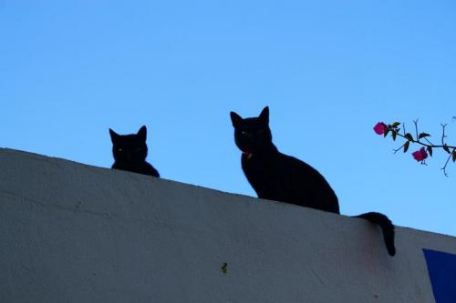

кружок по samba de roda в петербурге
тебе надоели нудятина однообразных «тумпамтум» на музыкальных занятиях и кислые щи твоих товарищей, мучительно насилующих беримбау гробовыми «чи чи тон тин»?
дружок! тогда тебе к нам:-)
мы рады пригласить тебя на кружок по традиционной samba de roda, который проходит по субботам в 15.00 по адресу б. пушкарская д. 10. тел. 947-65-45
в нашей программе:
- разбор традиционных песен samba de roda
- хоровые распевки по нижним и верхним регистрам голоса.
- работа с унисонным звучанием.
- фразировки и ритмическая составляющая песен.
- многоголосие, полифония, разбор базовых ритмов samba de roda на pandeiro и atabaque.
стоимость занятия 200 руб.
всех ждем.

с любовью, ваши ведущие кружка данила и павлик камалеао.